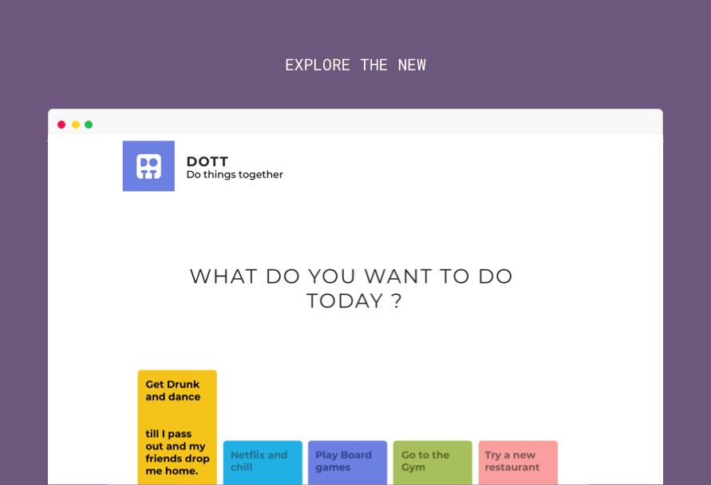
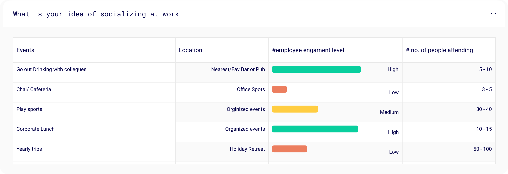
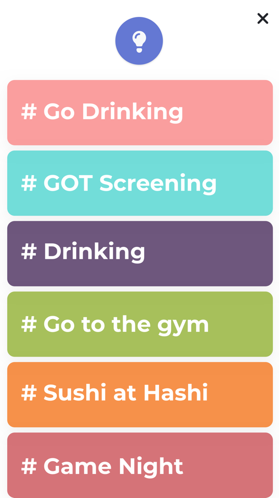
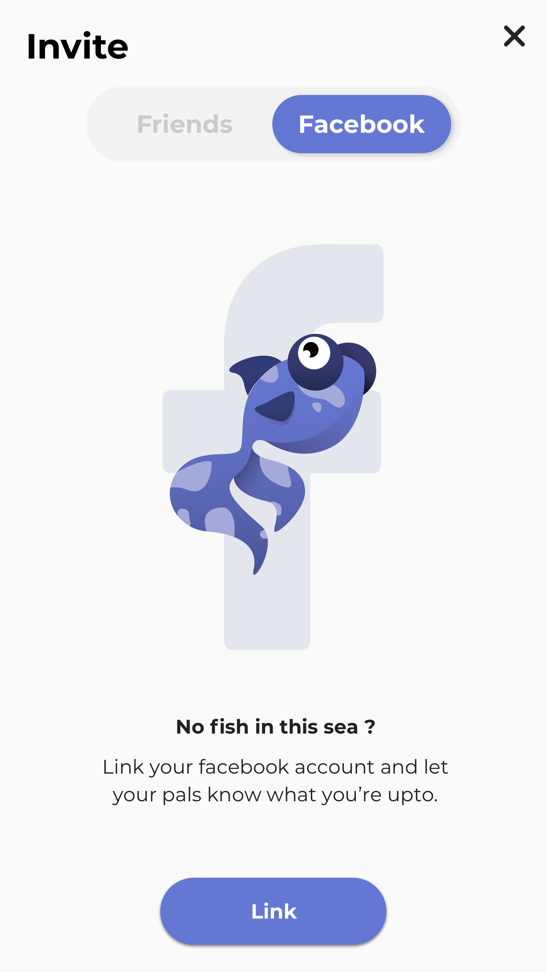

<div class="load-data">
    <div class="popup-main-content">
        <div class="container">
            <div class="row">
                <div class="col-md-12">
                    <div class="portfolio-details-title">
                        <h2>DOTT - DO THINGS TOGETHER</h2>
                    </div>
                    <!-- /portfolio-details-title -->
                </div>
                <div class="col-lg-6">
                    <div class="portfolio-details-info">
                        <div class="tags"><span>CLIENT: </span> TINMEN</div>
                        <div class="tags"><span>PROJECT: </span> SOCIAL PLATFORM</div>
                        <div class="tags"><span>YEAR: </span> 2019</div>
                    </div>
                    <!-- /portfolio-info -->

                </div>
                <!-- /portfolio-description -->
                <div class="col-lg-6 mt-40 mt-lg-0">
                    <p class="portfolio-description mt-30">Dott is a platform that enables you to socialize with your co-works beyond
                        the whole worklife.</p>
                    <p class="portfolio-description mt-30">
                        It Helps you network across your office space, build collaborations, and maybe, just maybe, you’ll find your office
                        tribe. </p>
                </div>
                <!-- /portfolio-description -->
                <div class="col-md-12 mt-80">
                    <div class="owl-carousel dott-carousel">
                        
                        
                        
                    </div>
                </div>
                <div class="col-lg-12 mt-80">
                    <h2 class="section-heading"><span>2/</span>Story</h2>
                    <h6 class="mb-30 mt-10">STORY BOARDING &ldquo;zindagi ki sachchi ghatna&rdquo;</h6>

                </div>

                <div class="col-lg-6">
                    
                    
                    
                </div>
                <div class="col-lg-6">
                    <p>MAU: Yo, Who’s the new guy in our team Snig?</p>
                    <p>SNIG: Mujhe Nahi pata bro! He’s from the Design team at Block 1
                        I guess.</p>
                    <p>MAU: You think he’d be interested in gamenights? Ask Him na! </p>
                    <p>SNIG: Crazy or what?! He just became a part of the team.
                    </p>
                    <p>MAU: He’s here till the end of next month. Dekhte hai! </p>
                    <p>SNIG: Wanna go have some coffee? </p>
                    <p>MAU: Chalo.</p>
                </div>
                <div class="col-lg-12 mt-80">
                    <h2 class="section-heading"><span>3/</span>Problem</h2>
                    <h6 class="text-uppercase mb-30 mt-10">why we dont socialize at work</h6>
                    <p class="dott-problem-tags">
                        <span>Awkward conversations</span>
                        <span>Small talk</span>
                        <span>Cause i see them everyday</span>
                        <span>Don't know what to do</span>
                        <span>Hierarchy creates barriers</span>
                        <span>Different interests</span>
                        <span>Shy to talk to new people</span>
                        <span>I'm an introvert</span>
                        <span>We always go out drinking</span>
                        <span>TOO MUCH WORK BRO! CAN'T</span>
                    </p>
                </div>

                <div class="col-lg-12 mt-80">
                    <h2 class="section-heading"><span>4/</span>Data Analysis</h2>
                    <h6 class="text-uppercase mb-30 mt-10">i bugged around 30 people fot this info</h6>
                    
                </div>

                <div class="col-md-12 mt-80">
                    <h2 class="section-heading"><span>5/</span>Screens</h2>
                    <h6 class="text-uppercase mb-30 mt-10">i bugged around 30 people fot this info</h6>
                </div>

                <div class="col-md-6 d-flex align-items-center mt-60">
                    
                    
                </div>
                <div class="col-md-6 mt-60">
                    <p class="mb-20">
                        Observation 01: People often run out of things
                    </p>
                    <p class="mb-20">
                        Thought Process: I checked a couple of forum/chat based platforms that indulge in group outings. I’m an extrovert so
                        I love inviting people over and having parties. All we do is chill at home but having more things to do would be
                        fun.
                    </p>
                    <p class="mb-20">
                        Conclusion: Knowing what is available around is a great way in engaging.Hence, I added a little idea button that
                        pops up things you can do nearby and the avg. time it takes.
                    </p>
                </div>
                <div class="col-md-6 mt-60">
                    <p class="mb-20">
                        Observation 02: People really dont know who their coworkers are in real life.
                    </p>
                    <p class="mb-20">
                        Thought Process: At work people can be completely different. I conducted an excersise within my team memebers that
                        each one would present a personal slide show of their interests and who they are this was a once every week event.
                    </p>
                    <p class="mb-20">
                        Conclusion: To my surprise such unknown talents I came to know of which, peeked my interest in getting to know the
                        person better.
                    </p>
                </div>
                <div class="col-md-6 d-flex align-items-center mt-60">
                    
                    
                </div>
                <div class="col-md-6 d-flex align-items-center mt-60">
                    
                    
                </div>
                <div class="col-md-6 mt-60">
                    <p class="mb-20">
                        Observation 03: People often feel at ease when there is a friendly face in a bunch of people.
                    </p>
                    <p class="mb-20">
                        Thought Process: This is very debatable. Cause I’m personally looking for new interesting people to interact with.
                        But I have tons of office contacts added in my FB friend list that I hardly see/meet. It’d be great to know what
                        they’ve been upto
                    </p>
                    <p class="mb-20">
                        Conclusion: Known faces is a feature that I added to the whole adding friends experience. To see how many common
                        events you have with that person.
                    </p>
                </div>

                <div class="col-md-12">
                    <div class="portfolio-details-nav d-flex justify-content-between">
                        <div>
                            <a class="portfolio-link" href="portfolio-details-01.html">Previous Project</a>
                        </div>
                        <div>
                            <a class="portfolio-link" href="portfolio-details-02.html">Next Project</a>
                        </div>
                    </div>
                    <!-- /portfolio-details-nav -->
                </div>

            </div>
        </div>
    </div>
</div>
